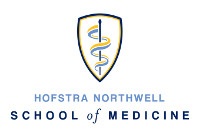
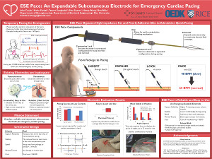
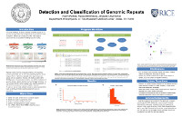
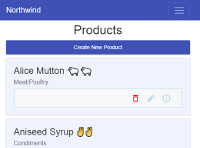
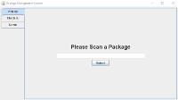
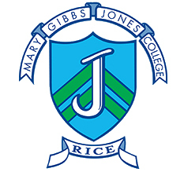
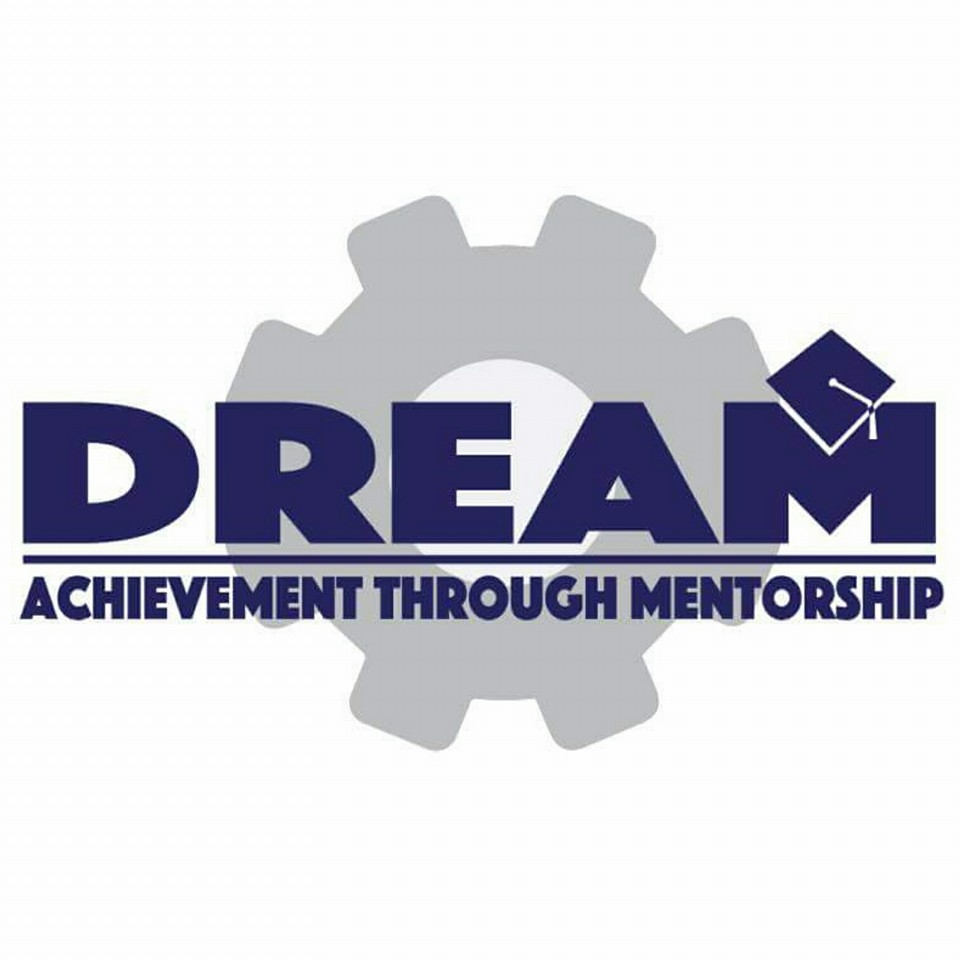
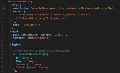

I'm currently attending school here. More details to come!
Education

Hofstra Northwell School of Medicine
Medical Degree
Aug 2017 - May 2021
Hempstead, NY
Rice University
Bachelor of Science in Bioengineering
Aug 2010 - May 2014
Houston, TX
GPA: 3.8/4.0
Three time recipient of the President's Honor Roll
Employment
Epic
Interface Engineer (EDI)
June 2014 - May 2016
Madison, WI
- Lead a 2-year, 3rd party interface installation at Johns Hopkins for their academic hospitals through collaboration with their 14-person interfaces team
- Presented interface design to over 100 clinical and technical personnel at Johns Hopkins Hospital for workflow validation
- Owned workflow direction sessions for interface division, collaborating with interface implementation leadership to improve process for workflow direction sessions
- Designed and developed server code for clinical interfaces with 3rd party systems following industry standards (HL7) as well as principles laid out by Epic developers
Rice University
Teaching Assistant
August 2012 - May 2014
Houston, TX
Electronics Lab Teaching Assistant
2013-2014
- Introduced concepts and reviewed course materials relevant to lab course
- Provided expertise for students on circuit design and algorithms
- Introduced concepts and reviewed course materials relevant to lab course, providing technical expertise to students and advising students on circuit design and algorithms (Spring 2013 and 2014 only)
Bioengineering Fundamentals Teaching Assistant
2012
- Advised and facilitated discussion among students for homework problems
- Graded homework problems on a biweekly basis
Research Experience

Rice University Capstone Design
Capstone Design Student
August 2013 - May 2014
Houston, TX
- Designed and documented ESE Pace, a novel device for temporary emergency pacing with interdisciplinary design team
- Collaborated with Dr. Mehdi Razavi at Texas Heart Institute
- Filed provisional application for patent
- Lead multiple animal studies on lambs with prototypes

UT Southwestern Medical Center
Summer Undergraduate Research Fellow
June 2012 - August 2012
Dallas, TX
- Designed protocol to find and cluster repetitive elements in human genome and de novo sequence reads from next generation sequencing techniques using C++
- Classified repetitive groups and validated method against previously identified repetitive elements in the human genome
- Reviewed literature outlining previous research on genome repeats and analysis of the human genome through computational methods
- Presented final research poster to program mentors and fellows
Programming Projects

Northwind Demo Application
Student Web Developer
February 2017 - April 2017
Madison, WI
- Designed a system for entering and editing products using the Northwind database
- Used modern encryption techniques to ensure secure data exchange
- Built site using PostgreSQL, Node, Express, and Angular with a teammate

Package Management System
Volunteer Software Engineer
January 2014 - May 2014
Houston, TX
- Designed a system in Java for college mail room
- Documented and licensed software under open source license (see Github)
- Implemented software with Jones College Coordinator
- Expanded software to other residential colleges throughout Rice University
Clinical Experience
MD Anderson Cancer Center
Clinical Interpretation Intern
January 2014 - May 2014
Houston, TX
- Shadowed Spanish interpreters across multiple specialties
- Actively involved myself in the interpreting process, learning both language and culture of the patients of different nationalities
- Observed multiple procedures across different specialties within cancer center
Physician Shadowing
Student Shadow
June 2013 - August 2013
Dallas, TX
- Shadowed an electrophysiologist, a pediatrician, and an outpatient oncologist in group and private practice settings
- Gained broad knowledge in these specialties and solidified resolve to study medicine
Community Involvement

Jones College Academic Fellows
Academic Fellow
August 2012 - May 2014
Houston, TX
- Planned and advertised Q&A panels with graduate and medical students
- Tutored introductory physics and bioengineering courses weekly with small groups
- Coordinated and lead large group review discussions prior to major exams

DREAM
Class Lead Mentor
August 2011 - May 2013
Houston, TX
- Coordinated 4 mentors and prepared material for class of 18 students in Stephen F. Austin High School weekly for specified design project
- Presented design criteria and updates to the class on a weekly basis
- Followed and mentored individual design teams for multiple projects
- Encouraged enrollment in higher education and engineering through conversation
Engineers without Borders
Nicaragua Team Engineer
August 2010 - June 2011
Houston, TX
- Designed and documented a bridge with Rice Engineers without Borders teams
- Developed and translated user manuals to Spanish for use by local community
- Traveled to and constructed bridge with community of El Panama, Nicaragua
Skills

Programming
Languages
- C++
- Python
- Java
- SQL
- PostgreSQL
- MATLAB
- MUMPS (M) and InterSystems Caché
- HTML
- CSS
- Javascript
- Typescript
Major Javascript Libraries
- Angular 2+
- NodeJS
- ExpressJS
- PassportJS
- jQuery
Computer Skills
- Unix
- Word
- Excel
- PowerPoint
- LaTeX
Foreign Languages
- Spanish - Fluent
- Chinese - Basic
Awards and Certificates
Epic Certifications
- EpicCare Ambulatory
- Bridges Interfaces
- Reporting

Academic Awards
- President's Honor Roll (3x)
- National Merit Scholar